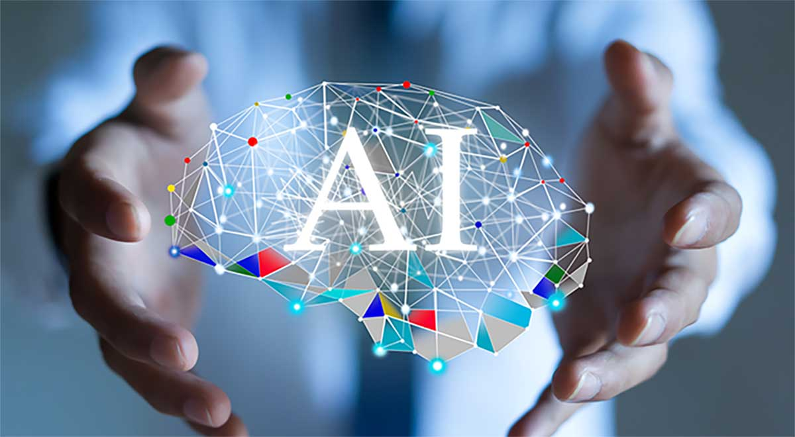

LET AI DO THE WORK FOR YOU
HOW COULD YOU MAKE A WEBSITE WITH AI TODAY ?
Mastering Website Creation with AI: Simplifying the process, step-by-step guidance, and expert tips for crafting your site using cutting-edge artificial intelligence technology
How to Make a website with AI
In today's rapidly evolving digital landscape, establishing a captivating online presence is vital for individuals, businesses, and organizations alike. A website acts as a virtual storefront, a conduit to engage audiences, and a stage to present products, services, or ideas.
f you're seeking to achieve a remarkable online presence without the need for coding skills, leveraging AI technology is the solution. Discover how to make a website with AI, empowering you to design and develop an alluring website effortlessly. Through AI-powered tools and platforms, the website creation process becomes seamless, efficient, and accessible to all, regardless of technical expertise. Explore the exciting possibilities of utilizing AI to craft websites that leave a lasting impression on your visitors.
Interested in learning how to make a website with AI? In today's rapidly evolving digital landscape, establishing a captivating online presence is vital for individuals, businesses, and organizations alike. A website acts as a virtual storefront, a conduit to engage audiences, and a stage to present products, services, or ideas. If you're seeking to achieve a remarkable online presence without the need for coding skills, leveraging AI technology is the solution. Discover how to make a website with AI, empowering you to design and develop an alluring website effortlessly.
Through AI-powered tools and platforms, the website creation process becomes seamless, efficient, and accessible to all, regardless of technical expertise. Explore the exciting possibilities of utilizing AI to craft websites that leave a lasting impression on your visitors.
Pros building website with AI
Embarking on the adventure of creating a website with AI is like strapping on a jetpack for your digital journey. In an era where technology is the cornerstone of innovation, understanding how to make a website with AI—the pros and cons—is key.
So, let's navigate through the landscape of AI-powered website construction, considering both the exciting advantages and the challenges that come with the endeavor to create a website with AI.
- A compelling online presence is essential in today's digital landscape, and a website serves as a virtual storefront and a platform to connect with audiences
- Building a website from scratch traditionally required technical expertise and extensive coding knowledge.
- AI-powered website builders have revolutionized the website creation process, offering efficiency, accessibility, and customization.
- These builders utilize machine learning algorithms to simplify and streamline web development.
- With AI-powered website builders, individuals and businesses can create professional and engaging websites without the need for extensive coding knowledge.
Understanding AI in Website Creation
Artificial intelligence (AI) has become a transformative force in various industries, and web development is no exception. To comprehend the impact of AI on website creation, it is essential to grasp the underlying concepts and evolution of this cutting-edge technology.
At its core, AI refers to the development of computer systems that possess the ability to perform tasks that would typically require human intelligence.
This encompasses tasks such as speech recognition, visual perception, decision-making, and problem-solving. Machine learning, a subset of AI, enables computer systems to learn from data and improve their performance over time without explicit programming
In the context of website creation, AI is leveraged to streamline and enhance the entire development process.
AI Revolutionizing Web Development
It empowers website builders to automate repetitive and time-consuming tasks, enabling them to focus on higher-level design decisions and strategic elements. This automation not only saves significant time and effort but also ensures consistent quality and precision in website creation.
The evolution of AI in web development has witnessed remarkable advancements. Initially, website builders predominantly relied on templates and rigid frameworks, limiting customization options. However, with the integration of AI, website builders have evolved into intelligent systems that adapt to user preferences, industry trends, and cutting-edge design practices.
Today's AI-powered website builders employ sophisticated algorithms that analyze vast amounts of data to understand user behavior, preferences, and engagement patterns.
This deep understanding enables them to provide personalized recommendations and suggestions, enhancing the user experience and overall effectiveness of the websites created.
Furthermore, AI has paved the way for intuitive user interfaces and drag-and-drop functionalities, eliminating the need for complex coding knowledge. With AI-powered website builders, individuals with limited technical expertise can effortlessly design and develop visually stunning websites, bringing their ideas to life with ease and convenience.
Another remarkable aspect of AI in website creation is its ability to optimize websites for performance, user engagement, and search engine rankings.
AI algorithms can analyze and optimize various elements, such as website speed, mobile responsiveness, and content relevance, resulting in websites that offer an exceptional user experience and higher visibility in search engine results.
Unleashing the Power of AI: Pushing Boundaries in Website Creation
The continuous advancements in AI technology continue to push the boundaries of what is possible in website creation. AI-powered chatbots and virtual assistants are being integrated into websites, providing instant customer support and enhancing user engagement. Voice recognition technology enables voice-activated commands and interactions, further enriching the user experience.
As AI technology progresses, it holds the potential to revolutionize website creation even further. The emergence of AI-generated content, where algorithms can generate written text, poses exciting possibilities for automating content creation and personalization. AI-driven design systems could revolutionize the aesthetics and visual aspects of websites, creating truly unique and captivating digital experiences.
In conclusion, understanding AI in website creation involves recognizing the transformative potential of this technology. AI empowers website builders with automation, personalization, and optimization capabilities, enabling the creation of visually stunning, user-friendly websites.
By leveraging machine learning algorithms and intuitive interfaces, AI-powered website builders democratize web development, making it accessible to individuals and businesses of all backgrounds.
The evolution of AI in web development continues to shape the future of website creation, offering endless possibilities for innovative and engaging online experiences.
Benefits of Using AI to Make Websites
The utilization of artificial intelligence (AI) in website creation brings forth a myriad of benefits that revolutionize the entire web development process. From enhancing efficiency to enabling customization and personalization, AI-powered website builders have transformed the way websites are designed, built, and maintained. Let's explore the key advantages of using AI to make websites:
Speed and Efficiency
AI-powered website builders significantly expedite the website creation process. By automating various time-consuming tasks, such as image resizing, content optimization, and code generation, AI eliminates the need for manual intervention, saving considerable time and effort.
Additionally, AI-driven systems leverage pre-designed templates, themes, and layouts, enabling users to create visually appealing websites with remarkable speed. With AI, what used to take weeks or months can now be accomplished in a matter of days or even hours.
Speed and Efficiency
AI-powered website builders significantly expedite the website creation process. By automating various time-consuming tasks, such as image resizing, content optimization, and code generation, AI eliminates the need for manual intervention, saving considerable time and effort. Additionally, AI-driven systems leverage pre-designed templates, themes, and layouts, enabling users to create visually appealing websites with remarkable speed. With AI, what used to take weeks or months can now be accomplished in a matter of days or even hours.
Customization and Personalization
AI empowers users to create highly customized and personalized websites. By analyzing user preferences, industry trends, and target audience behavior, AI algorithms provide tailored design recommendations and optimize website elements accordingly. Users have the flexibility to choose from a wide array of templates, themes, color schemes, and typography options, aligning the website with their unique brand identity. This level of customization ensures that each website is distinctive and effectively represents the individual or business behind it, fostering a memorable and engaging user experience.
User-Friendliness and Accessibility
The elimination of technical complexities makes web development accessible to a broader audience, including individuals without programming knowledge. AI-powered website builders democratize the process, allowing entrepreneurs, artists, bloggers, and small business owners to independently create professional-grade websites that resonate with their target audience.
Cost-Effectiveness
Traditional website development often involves significant expenses, particularly when hiring professional web developers or agencies. AI-powered website builders offer a cost-effective alternative, significantly reducing the financial burden.
By eliminating the need for extensive coding and technical expertise, AI enables businesses and individuals to create websites in-house, saving substantial outsourcing costs. Additionally, many AI-powered website builders offer flexible pricing plans, accommodating businesses of all sizes and budgets. This affordability makes AI an attractive option for startups, small businesses, and individuals looking to establish a strong online presence without breaking the bank.
Ongoing Optimization and Adaptability
AI-powered website builders not only facilitate initial website creation but also provide ongoing optimization and adaptability. These platforms continuously analyze user behavior, engagement metrics, and industry trends to suggest improvements and refinements.
From SEO optimization to performance enhancements, AI algorithms ensure that websites stay relevant, responsive, and user-friendly. This adaptability allows businesses to keep up with changing market demands, ensuring that their websites remain competitive and effective in attracting and retaining visitors.
In summary, the benefits of using AI to make websites are far-reaching. AI-powered website builders offer speed, efficiency, customization, user-friendliness, and cost-effectiveness. They empower users to create visually stunning, personalized websites without the need for extensive coding knowledge. With ongoing optimization and adaptability, AI ensures that websites stay relevant and effective in the ever-evolving digital landscape. Embracing AI in website creation unlocks the potential for businesses and individuals to establish a strong online presence, captivate audiences, and drive success in the digital realm.
The Process of Making a Website with AI
Making a website with the assistance of artificial intelligence (AI) involves a streamlined and user-friendly process that simplifies the traditional complexities of web development. AI-powered website builders combine intuitive interfaces, intelligent algorithms, and automation to empower individuals and businesses to create stunning websites. Let's delve into the step-by-step process of making a website with AI:
Selecting an AI-Powered Website Builder
The first step is to choose an AI-powered website builder that aligns with your specific needs and goals. There are various options available in the market, each offering different features, templates, and customization capabilities. Consider factors such as ease of use, available design options, integration possibilities, and pricing plans. Research and compare different platforms to find the one that suits your requirements and provides the desired level of AI assistance.
Setting Up the Website Infrastructure
Once you've selected an AI-powered website builder, the next step is to set up the website infrastructure. This typically involves selecting a domain name (the web address of your site) and hosting provider. Many AI-powered website builders offer integrated domain registration and hosting services, simplifying the process. Follow the instructions provided by the website builder to register your domain and set up hosting, ensuring that your website has a reliable online presence.
Choosing a Template and Designing the Layout
AI-powered website builders offer a wide array of professionally designed templates and themes. Browse through the available options and select a template that best represents your brand or vision. These templates are typically customizable, allowing you to modify colors, fonts, and other design elements to align with your brand identity. Use the intuitive interface and drag-and-drop functionality to arrange the layout, placing elements such as headers, menus, and content sections in a visually appealing and user-friendly manner.
Adding and Customizing Content
Content is a crucial component of any website. With an AI-powered website builder, you can easily add and customize content without the need for coding or technical expertise. Utilize pre-designed content blocks or sections to insert text, images, videos, and other media elements. Many AI-powered platforms offer AI-generated content suggestions based on your industry or niche, helping you create engaging and relevant content for your website. Tailor the content to convey your message effectively and captivate your target audience.
Optimizing for Search Engines
To ensure that your website is discoverable by search engines and ranks well in search results, it's important to optimize it for search engine optimization (SEO). AI-powered website builders often provide built-in SEO optimization features. Take advantage of these tools to optimize your website's meta tags, titles, headings, and descriptions. Additionally, optimize your content with relevant keywords and ensure that your website follows SEO best practices, such as fast loading times and mobile responsiveness
Testing and Launching the Website
Before launching your website, thoroughly test its functionality, responsiveness, and user experience across different devices and browsers. AI-powered website builders typically offer preview modes or built-in testing tools that allow you to preview how your website will appear to visitors. Make any necessary adjustments or fixes based on the testing results. Once you're satisfied with the website's performance and aesthetics, it's time to publish and launch it to the public.
Monitoring and Continuous Improvement
The process of making a website with AI doesn't end with its launch. It's crucial to continuously monitor and analyze the website's performance, user engagement, and conversion metrics. AI-powered website builders often provide analytics and reporting tools that offer insights into your website's traffic, user behavior, and conversions. Leverage these insights to identify areas for improvement and make data-driven decisions to enhance your website's effectiveness over time.
Conclusion on how to make a website with AI
In conclusion, AI-powered website builders have transformed the web development landscape, making it more efficient, customizable, and accessible. These platforms offer speed, user-friendliness, and cost-effectiveness, empowering individuals and businesses to create professional-looking websites without the need for extensive coding knowledge. However, it's important to remember that AI complements rather than replaces the expertise of professional web developers in more complex projects. By embracing the power of AI in website creation, you can unlock the full potential of your online presence and stay ahead in the digital world.
FAQ (Frequently Asked Questions)
Can AI truly replace professional web developers?
builders have greatly simplified the process of website creation, making it more accessible to individuals without technical expertise. While AI can handle many aspects of website development, professional web developers still play a crucial role in more complex projects or those requiring advanced customizations. They bring their expertise, creativity, and deep understanding of web development principles to deliver unique solutions tailored to specific business needs.
How customizable are AI-powered website builders?
AI-powered website builders offer a high degree of customization. Users can choose from a wide range of templates, themes, and design elements to create a website that reflects their unique brand identity. Additionally, AI algorithms analyze user preferences, target audience, and industry to provide personalized design recommendations. With the ability to modify layouts, color schemes, typography, and content, users can achieve a website that aligns perfectly with their vision.
What about SEO optimization?
AI-powered website builders offer a high degree of customization. Users can choose from a wide range of templates, themes, and design elements to create a website that reflects their unique brand identity. Additionally, AI algorithms analyze user preferences, target audience, and industry to provide personalized design recommendations. With the ability to modify layouts, color schemes, typography, and content, users can achieve a website that aligns perfectly with their vision.
Can AI-powered website builders handle complex functionalities?
While AI-powered website builders excel at creating visually appealing and user-friendly websites, their capabilities in handling complex functionalities may vary. Basic functionalities, such as contact forms, image galleries, and blog integration, are typically supported. However, for more advanced features or custom requirements, additional technical expertise or the assistance of a professional web developer may be necessary.
Are AI-powered websites adaptable and scalable?
Yes, one of the strengths of AI-powered website builders is their adaptability and scalability. Machine learning algorithms enable these platforms to continuously learn from user behavior, preferences, and industry trends. As a result, websites created with AI can be easily updated and improved over time. Whether it's adding new features, expanding content, or adapting to changing business needs, AI-powered websites can evolve to keep pace with the ever-changing digital landscape.